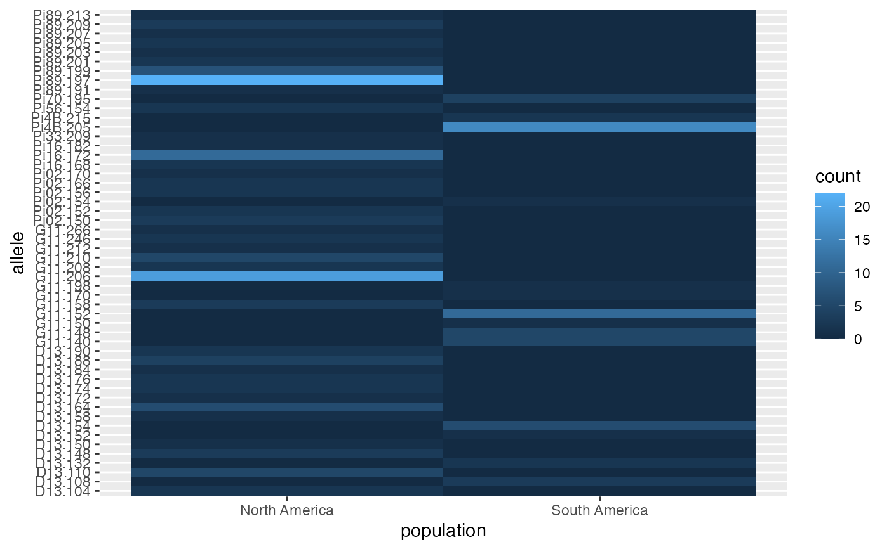

R/Index_calculations.r
private_alleles.RdTabulate alleles the occur in only one population.
private_alleles( gid, form = alleles ~ ., report = "table", level = "population", count.alleles = TRUE, drop = FALSE )
| gid | a genind or genclone object. |
|---|---|
| form | a |
| report | one of |
| level | one of |
| count.alleles |
|
| drop |
|
a matrix, data.frame, or vector defining the populations or individuals containing private alleles. If vector is chosen, alleles are not defined.
the argument form allows for control over the strata at which
private alleles should be computed. It takes a form where the left hand
side of the formula can be either "allele", "locus", or "loci". The right
hand of the equation, by default is ".". If you change it, it must
correspond to strata located in the adegenet::strata() slot.
Note, that the right hand side is disabled for genpop objects.
Zhian N. Kamvar
#> Pi02.150 Pi02.152 Pi02.154 Pi02.156 Pi02.166 Pi02.170 D13.104 #> South America 0 0 1 0 0 0 0 #> North America 3 2 0 2 2 1 2 #> D13.108 D13.110 D13.132 D13.148 D13.150 D13.152 D13.154 D13.158 #> South America 3 0 2 0 0 1 6 0 #> North America 0 5 0 3 1 0 0 1 #> D13.164 D13.172 D13.174 D13.176 D13.184 D13.188 D13.190 Pi33.209 #> South America 0 0 0 0 0 0 0 0 #> North America 6 1 2 2 1 4 2 1 #> Pi4B.205 Pi4B.215 Pi16.168 Pi16.172 Pi16.182 G11.140 G11.148 #> South America 16 2 0 0 0 5 5 #> North America 0 0 2 11 1 0 0 #> G11.150 G11.152 G11.158 G11.170 G11.198 G11.206 G11.208 G11.210 #> South America 1 11 0 1 1 0 0 0 #> North America 0 0 3 0 0 19 2 5 #> G11.212 G11.246 G11.266 Pi56.154 Pi70.195 Pi89.191 Pi89.197 #> South America 0 0 0 0 4 0 0 #> North America 1 2 1 2 0 1 22 #> Pi89.199 Pi89.201 Pi89.203 Pi89.205 Pi89.207 Pi89.209 Pi89.213 #> South America 0 0 0 0 0 0 0 #> North America 7 2 1 2 1 3 1# \dontrun{ # Analyze private alleles based on the country of interest: private_alleles(Pinf, alleles ~ Country)#> Pi02.150 Pi02.152 Pi02.154 Pi02.156 Pi02.166 Pi02.170 D13.104 D13.110 #> Colombia 0 0 0 0 0 0 0 0 #> Ecuador 0 0 0 0 0 0 0 0 #> Mexico 3 2 0 2 2 1 2 5 #> Peru 0 0 1 0 0 0 0 0 #> D13.148 D13.150 D13.152 D13.154 D13.158 D13.164 D13.172 D13.174 #> Colombia 0 0 0 0 0 0 0 0 #> Ecuador 0 0 0 0 0 0 0 0 #> Mexico 3 1 0 0 1 6 1 2 #> Peru 0 0 1 6 0 0 0 0 #> D13.176 D13.184 D13.188 D13.190 Pi33.209 Pi4B.215 Pi16.168 Pi16.172 #> Colombia 0 0 0 0 0 0 0 0 #> Ecuador 0 0 0 0 0 0 0 0 #> Mexico 2 1 4 2 1 0 2 11 #> Peru 0 0 0 0 0 2 0 0 #> Pi16.182 G11.140 G11.148 G11.150 G11.158 G11.170 G11.198 G11.206 #> Colombia 0 0 0 0 0 0 0 0 #> Ecuador 0 0 0 1 0 0 0 0 #> Mexico 1 0 0 0 3 0 0 19 #> Peru 0 5 5 0 0 1 1 0 #> G11.208 G11.210 G11.212 G11.246 G11.266 Pi56.154 Pi70.195 Pi89.191 #> Colombia 0 0 0 0 0 0 0 0 #> Ecuador 0 0 0 0 0 0 0 0 #> Mexico 2 5 1 2 1 2 0 1 #> Peru 0 0 0 0 0 0 4 0 #> Pi89.197 Pi89.199 Pi89.201 Pi89.203 Pi89.205 Pi89.207 Pi89.209 #> Colombia 0 0 0 0 0 0 0 #> Ecuador 0 0 0 0 0 0 0 #> Mexico 22 7 2 1 2 1 3 #> Peru 0 0 0 0 0 0 0 #> Pi89.213 #> Colombia 0 #> Ecuador 0 #> Mexico 1 #> Peru 0# Number of observed alleles per locus private_alleles(Pinf, locus ~ Country, count.alleles = TRUE)#> Pi02 D13 Pi33 Pi4B Pi16 G11 Pi56 Pi70 Pi89 #> Colombia 0 0 0 0 0 0 0 0 0 #> Ecuador 0 0 0 0 0 1 0 0 0 #> Mexico 10 30 1 0 14 33 2 0 40 #> Peru 1 7 0 2 0 12 0 4 0# Get raw number of private alleles per locus. (pal <- private_alleles(Pinf, locus ~ Country, count.alleles = FALSE))#> Pi02 D13 Pi33 Pi4B Pi16 G11 Pi56 Pi70 Pi89 #> Colombia 0 0 0 0 0 0 0 0 0 #> Ecuador 0 0 0 0 0 1 0 0 0 #> Mexico 5 12 1 0 3 7 1 0 9 #> Peru 1 2 0 1 0 4 0 1 0#> Pi02 D13 Pi33 Pi4B Pi16 G11 Pi56 Pi70 #> Colombia 0.00000000 0.00000000 0.0000000 0.000 0.0000000 0.00000000 0.00 0.00 #> Ecuador 0.00000000 0.00000000 0.0000000 0.000 0.0000000 0.04545455 0.00 0.00 #> Mexico 0.45454545 0.46153846 0.3333333 0.000 0.4285714 0.31818182 0.25 0.00 #> Peru 0.09090909 0.07692308 0.0000000 0.125 0.0000000 0.18181818 0.00 0.25 #> Pi89 #> Colombia 0.00 #> Ecuador 0.00 #> Mexico 0.75 #> Peru 0.00# An example of how these data can be displayed. library("ggplot2") Pinfpriv <- private_alleles(Pinf, report = "data.frame") ggplot(Pinfpriv) + geom_tile(aes(x = population, y = allele, fill = count))# }